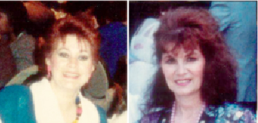

Viewpoint: 30th Anniversary
Key people in one small room at 33rd Street and 7th Ave. Edith, Rose, Zoraida, William, Michael, Peter and Sidney. What a family! None of us knew how to do a newspaper, but with God’s help we did it. Our first newspaper was eight pages and God’s wonderful dream for the Tri-State area came true.
I started in September 1985 not knowing much except how to work the phones.
Also I was recovering from Bacterial Pneumonia in November 1985, when some unbelievers didn’t want me to work here but I stayed the course. I was completely healed in time to cook Thanksgiving dinner thanks to the prayers of the saints.
Thank you to Pastor David N. Stranges, our spiritual overseer who said “GO WITH IT, DO IT, PRINT IT. YOU’VE GOT MY BLESSINGS.”
After a few years I started typing invoices making phone calls and proof reading. Then I learned how to lay out ot the Ads of the paper.
Over the years so many Pastors have come to our office and I wish I had a camera to take their photos. Many came to pray for the staff and over the news paper. What a Blessing to us. Many times we were invited to events, we try to attend or send someone, but sometimes we couldn’t make it. So keep asking of course. You never know.
In years past I have met so many brothers and sisters who became close friends to me. I appreciate them and their faithfulness to The Love Express and their faith in us to produce an anointed paper.
The Love Express is not a “Job” to me; it is a passion, a love for “Building Bridges” to our fellow ministries, churches and businesses.
In the forthcoming year, we hope to improve further in our relationship with our brothers and sisters in the Lord. Especially in our phone calls. I admit I have made many mistakes and acted poorly, so please forgive me and pray for me as I am praying for you. We do believe our advertisers deserve the best we can provide because they make up The Love Express “good news.” There’s a saying “Stick to what you love” and we at The Love Express, Edith especially believes this with her whole heart and so do I.
We are a serious Publication to the Body of Believers.
Lets Pray...
Lord with grateful hearts, you have comforted us in our disappointments, calmed us when irritated and strengthened us in the face of temptations and doubts. Remove all worry and fear from us as you continue your loving watchful care over us. We praise you Lord, Amen
SEPTEMBER 2015
Key people; Edith, Rose, Deborah, William, Sehon, Shanelle, Natalie, Melville, Peter, L.I.C, Printer, Distributors, Writers, Pastors, Churches, Businesses, Subscribers, Advertisers, Family and Friends.
“Thank you all for understanding my passion for the Love Express, my Viewpoint and Righteous Recipes.”
God bless from my heart, Rose
HAPPY 30th ANNIVERSARY TO THE LOVE EXPRESS